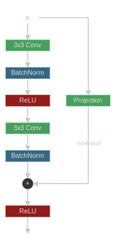
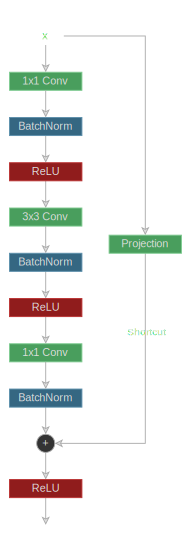

이미지 인식을 위한 잔차 학습 (ResNet)
이것은 논문 Deep Residual Learning for Image Recognition의 파이토치 구현체입니다.
ResNets은 성능 저하 문제를 극복하기 위해 잔차 함수로서 레이어를 학습한다. 성능 저하 문제는 신경망의 레이어 수가 매우 커질 때 정확도가 하락하는 것을 말한다. 정확도는 레이어의 수가 증가하면서 높아지다가 점차 포화상태가 되고 하락하기 시작한다.
본 논문은 추가적인 레이어가 동일한 입력을 전달하도록 학습할 수 있기 때문에 깊은 레이어를 가진 모델이 최소한 얕은 레이어를 가진 모델만큼은 성능을 보여주어야 한다고 주장한다.
잔차 학습
만약에 가 일부 레이어를 통해 학습되어야 하는 연결함수라면, 그 대신에 다음과 같은 잔차 함수를 학습한다.
그리고 원본 함수는 가 된다.
이 경우, 가 동일한 입력을 전달해주도록 학습하는 것은 가 이 되도록 학습하는 것과 동일하고, 이 과정이 학습하기 더 쉽다.
매개변수 형태로 이를 표현해보면 아래와 같다
그리고 의 특징 맵 크기와 의 크기가 다른 경우, 본 논문은 학습된 가중치 를 활용하여 아래와 같이 선형 사영을 하는 것을 제안한다.
본 논문에서 선형 사영 대신 제로 패딩을 활용하여 실험을 했지만, 선형 사영이 더 좋은 성능을 보이는 것을 확인했다. 또한 만약에 특징 맥 크기가 일치한다면 동일한 입력을 전달하는 것이 선형 사영보다 더 좋은 성능을 보임을 확인했다.
는 한 개 이상의 레이어를 가지고 있어야 하는데, 그렇지 않으면 의 합은 비선형성을 가지지 않아서 선형 레이어처럼 동작할 것이다.
이것은 CIFAR-10에 대하여 ResNet를 학습하는 학습 코드 이다.
55from typing import List, Optional
56
57import torch
58from torch import nn
59
60from labml_helpers.module import Module63class ShortcutProjection(Module):in_channels는 에서 채널의 수를 의미한다out_channels는 에서 채널의 수를 의미한다stride는 에서 합성곱 연산에 활용되는 보폭의 길이를 의미한다. 우리는 특징 맵 크기를 맞추기 위해 shortcut 연결에 동일한 보폭을 사용한다.
70 def __init__(self, in_channels: int, out_channels: int, stride: int):77 super().__init__()선형 사영 을 위한 합성곱 레이어
80 self.conv = nn.Conv2d(in_channels, out_channels, kernel_size=1, stride=stride)본 논문은 매 합성곱 연산 이후에 배치 정규화를 추가해주는 것을 제안한다
82 self.bn = nn.BatchNorm2d(out_channels)84 def forward(self, x: torch.Tensor):합성곱과 배치 정규화
86 return self.bn(self.conv(x))잔차 블록
이것은 논문에 설명된 잔차 블록을 구현한다. 그것은 두 개의 합성곱 레이어를 가지고 있다.

첫 번째 합성곱 레이어는 in_channels
를 out_channels
로 연결하는데, 우리가 특징 맵 크기를 보다 큰 스트라이드를 가지고 줄이는 경우 out_channels
이 in_channels
보다 크다.
두 번째 합성곡 레이어는 out_channels
를 out_channels
로 연결하고 항상 길이 1의 스트라이드를 가진다.
두 개의 합성곱 레이어 이후에는 배치 정규화가 진행된다.
89class ResidualBlock(Module):in_channels는 에서의 채널의 수이다out_channels는 출력 채널의 수이다stride는 합성곱 연산에서의 스트라이드 길이이다.
110 def __init__(self, in_channels: int, out_channels: int, stride: int):116 super().__init__()첫 번째 합성곱 레이어는 out_channels로 연결한다
119 self.conv1 = nn.Conv2d(in_channels, out_channels, kernel_size=3, stride=stride, padding=1)첫 번째 합성곱 연산 이후 배치 정규화를 진행
121 self.bn1 = nn.BatchNorm2d(out_channels)첫 번째 활성화 함수 (ReLU)
123 self.act1 = nn.ReLU()두 번째 합성곱 레이어
126 self.conv2 = nn.Conv2d(out_channels, out_channels, kernel_size=3, stride=1, padding=1)두 번째 합성곱 연산 이후 배치 정규화를 진행
128 self.bn2 = nn.BatchNorm2d(out_channels)Shortcut 연결은 스트라이드 길이가 이 아니거나 채널의 수가 바뀐다면 사영되어야 한다
132 if stride != 1 or in_channels != out_channels:의 사영 값
134 self.shortcut = ShortcutProjection(in_channels, out_channels, stride)
135 else:의 동일 값
137 self.shortcut = nn.Identity()두 번째 활성화 함수 (ReLU) (shortcut 연결을 추가한 이후)
140 self.act2 = nn.ReLU()x는[batch_size, in_channels, height, width]와 같은 입력이다
142 def forward(self, x: torch.Tensor):shortcut 연결을 진행
147 shortcut = self.shortcut(x)첫 번째 합성곱 연산과 활성화 함수 적용
149 x = self.act1(self.bn1(self.conv1(x)))두 번째 합성곱 연산
151 x = self.bn2(self.conv2(x))shortcut 연결을 추가한 이후 활성화 함수 적용
153 return self.act2(x + shortcut)병목 잔차 블록
이것은 논문에 묘사된 병목 블록을 구현한 것이다. 병목 블록에는 , , 그리고 합성곱 레이어가 존재한다.

첫 번째 합성곱 레이어는 in_channels
를bottleneck_channels
로 합성곱 연산과 함께 연결하고, 이 때 bottleneck_channels
는 in_channels
보다 작다.
두 번째 합성곱 레이어는 bottleneck_channels
를 bottleneck_channels
로 연결한다. 이것은 우리가 특징 맵 크기를 압축하고자 할 때 보다 큰 스트라이드 크기를 가질 수 있다.
세 번째이자 마지막 합성곱 레이어는 out_channels
로 연결한다. 만약 스트라이드 길이가 보다 크다면 out_channels
는 in_channels
보다 크고 그렇지 않으면, 는 in_channels 과 동일하다.
bottleneck_channels
는 in_channels
보다 작고 합성곱 연산은 이 줄어든 공간에서 시행되게 된다 (따라서 병목이라 한다). 두 개의 합성곱 연산은 채널의 수를 줄이거나 늘리게 된다.
156class BottleneckResidualBlock(Module):in_channels는 에서 채널의 수를 의미한다bottleneck_channels는 합성곱 연산을 위한 채널의 수를 의미한다out_channels는 출력 채널의 수를 의미한다stride는 합성곱 연산에서의 스트라이드 길이를 의미한다.
184 def __init__(self, in_channels: int, bottleneck_channels: int, out_channels: int, stride: int):191 super().__init__()첫 번째 합성곱 레이어는 bottleneck_channels로 연결한다
194 self.conv1 = nn.Conv2d(in_channels, bottleneck_channels, kernel_size=1, stride=1)첫 번째 합성곱 연산 이후 배치 정규화
196 self.bn1 = nn.BatchNorm2d(bottleneck_channels)첫 번째 활성화 함수 (ReLU)
198 self.act1 = nn.ReLU()두 번째 합성곱 레이어
201 self.conv2 = nn.Conv2d(bottleneck_channels, bottleneck_channels, kernel_size=3, stride=stride, padding=1)두 번째 합성곱 연산 이후 배치 정규화
203 self.bn2 = nn.BatchNorm2d(bottleneck_channels)두 번째 활성화 함수 (ReLU)
205 self.act2 = nn.ReLU()세 번째 합성곱 레이어, 이것은 out_channels 로 연결한다
.
208 self.conv3 = nn.Conv2d(bottleneck_channels, out_channels, kernel_size=1, stride=1)두 번째 합성곱 연산 이후 배치 정규화
210 self.bn3 = nn.BatchNorm2d(out_channels)스트라이드 길이가 이 아니거나 채널의 수가 변화한다면 shortcut 연결은 반드시 사영되어야 한다
214 if stride != 1 or in_channels != out_channels:의 사영
216 self.shortcut = ShortcutProjection(in_channels, out_channels, stride)
217 else:동일한
219 self.shortcut = nn.Identity()두 번째 활성화 함수 (ReLU) (shortcut 연결을 추가한 이후)
222 self.act3 = nn.ReLU()x는[batch_size, in_channels, height, width] 모양의 입력이다
224 def forward(self, x: torch.Tensor):shortcut 연결
229 shortcut = self.shortcut(x)첫 번째 합성곱 연산과 활성화 함수
231 x = self.act1(self.bn1(self.conv1(x)))첫 번째 합성곱 연산과 활성화 함수
233 x = self.act2(self.bn2(self.conv2(x)))세 번째 합성곱 연산
235 x = self.bn3(self.conv3(x))shortcut 연결을 추가한 이후 활성화 함수
237 return self.act3(x + shortcut)ResNet 모델
이것은 첫번째 선형 레이어와 분류를 위한 softmax가 없는 기본적인 resnet 모델이다.
resnet은 잔차 블록들 이나 병목 잔차 블록들이 쌓여서 만들어졌다. 특징 맵 크기는 스트라이드 길이 의 몇몇 블록들 이후에 반으로 줄어들게 된다. 채널의 수는 특징 맵 크기가 줄어들었을 때 증가한다. 마지막으로 특징 맵은 벡터 표현값을 얻기 위해 평균 풀링된다.
240class ResNetBase(Module):n_blocks는 각 특징 맵 크기에 맞는 블록 수의 리스트이다.n_channels는 각 특징 맵 크기에 맞는 채널의 수이다.bottlenecks는 병목 블록에서의 채널의 수이다. 만약 이것이None이라면, 잔차 블록 이 사용된다.img_channels는 입력에서의 채널의 수이다.first_kernel_size는 첫 번째 합성곱 레이어에서의 커널 크기이다.
254 def __init__(self, n_blocks: List[int], n_channels: List[int],
255 bottlenecks: Optional[List[int]] = None,
256 img_channels: int = 3, first_kernel_size: int = 7):265 super().__init__()각 특징 맵 크기의 블록 수와 채널 수
268 assert len(n_blocks) == len(n_channels)271 assert bottlenecks is None or len(bottlenecks) == len(n_channels)첫 번째 합성곱 레이어는 img_channels
를 첫 번째 잔차 블록에서의 채널의 수로 연결한다 (n_channels[0]
)
275 self.conv = nn.Conv2d(img_channels, n_channels[0],
276 kernel_size=first_kernel_size, stride=2, padding=first_kernel_size // 2)첫 번째 합성곱 연산 이후 배치 정규화
278 self.bn = nn.BatchNorm2d(n_channels[0])블록들의 리스트
281 blocks = []이전 레이어에서 채널의 수 (혹은 블록의 수)
283 prev_channels = n_channels[0]각각의 특징 맵 크기에 맞춰 순회
285 for i, channels in enumerate(n_channels):제일 첫 번재 블록을 제외하고 새로운 특징 맵 크기에 맞는 첫 번째 블록은 의 스트라이드 길이를 가질 것이다
288 stride = 2 if len(blocks) == 0 else 1
289
290 if bottlenecks is None:292 blocks.append(ResidualBlock(prev_channels, channels, stride=stride))
293 else:296 blocks.append(BottleneckResidualBlock(prev_channels, bottlenecks[i], channels,
297 stride=stride))채널의 수를 변화한다
300 prev_channels = channels특징 맵 트기나 채널에는 변화 없이 나머지 블록들을 추가한다
302 for _ in range(n_blocks[i] - 1):
303 if bottlenecks is None:블록들을 쌓는다
311 self.blocks = nn.Sequential(*blocks)x는[batch_size, img_channels, height, width] 의 모양을 가지고 있다
313 def forward(self, x: torch.Tensor):첫 번째 합성곱 연산과 배치 정규화
319 x = self.bn(self.conv(x))잔차 (혹은 병목) 블록
321 x = self.blocks(x) x
를 [batch_size, channels, h, w]의 모양으로부터
[batch_size, channels, h * w]의 모양으로 변화시킨다
323 x = x.view(x.shape[0], x.shape[1], -1)전역 평균 풀링
325 return x.mean(dim=-1)